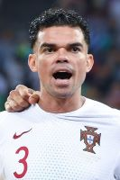

Concurrenten
Nationale concurrenten
Op nationaal gebied heeft Cristiano eigenlijk geen concurrenten. Luís Figo was zijn grootste concurrent, maar zijn carriëre eindigde al in 2006, die vormt geen bedreiging meer de toppositie van Ronaldo. Nani en Pepe zouden nu de eerste bedreiging voor de nummer 7 worden, maar ook deze spelers zijn nog lang niet op het niveau van Ronaldo. Zo heeft Ronaldo 94 goals uit 161 interlands gemaakt en Nani maar 24 goals uit 112 interlands. Verder valt Pepe moeilijk te vergelijken met Ronaldo aangezien hij verdediger is en Ronaldo een aanvallende positie bespeelt. We hoeven dus ook geen extra uitleg te geven over de 2 spelers, aangezien ze toch geen echte concurrenten zijn.
Foto van Pepe
Internationale concurrenten
Als we het over concurrenten van Ronaldo hebben, praten we over de mensen die met Ronaldo strijden, en een kans maken, om bepaalde prijzen te winnen, wij nemen de Ballon d'Or als indicator. Deze prijs wordt elk jaar uitgereikt aan de beste voetballer van het jaar. In de afgelopen 3 jaar waren er 4 belangrijke concurrenten, Messi, Neymar, Griezzman en Van Dijk. Deze worden allemaal besproken in het artikel hieronder.
Messi
Neymar


Lionel Messi is een Argentijnse profvoetballer die sinds 2000 en nu nog steeds bij FC Barcelona speelt. Hij is geboren op 24 juni 1987. Toen de nummer 7 nog in de Spaanse competitie speelde, werd de topscorer altijd Messi of Ronaldo. Sinds Ronaldo naar Italië vertrok, is het elke keer Messi geworden. Hij strijdt al jaren met Ronaldo om de gouden bal. Zo won Ronaldo hem in 2017, maar Messi kreeg hem in 2019. Beide spelers zitten de afgelopen jaren elke keer weer in de top 5.
Neymar is een Brazilaanse profvoetballer die op dit moment bij Paris Saint-German, in Frankrijk speelt. Hij is geboren op 5 februari 1992. In 2017 werd Neymar 3e in de race voor de gouden bal. Sowieso toen Neymar bij Barcelona speelde van 2013 tot en met 2017 was hij een van de betere spelers van de Spaanse competitie, hij werd zelfs bijna topscorer. 2019 viel tegen voor de Braziliaan, hij kwam niet in de top 10 van de Gouden Bal.
Griezzman
Van Dijk